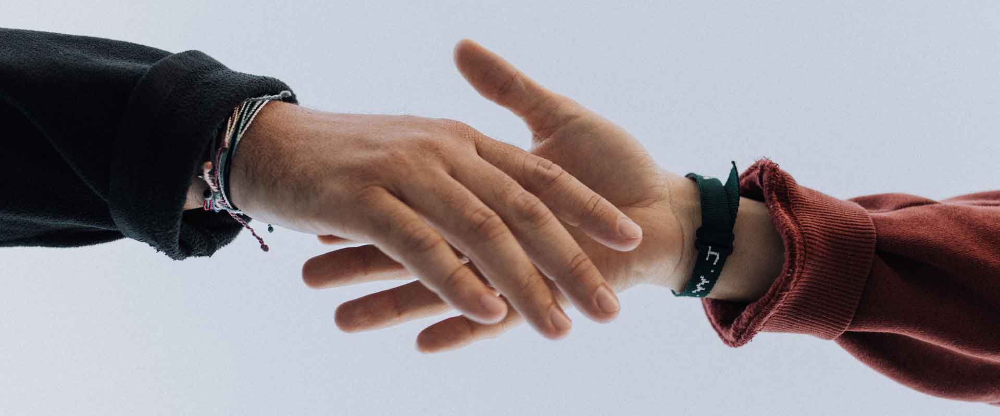

Reforestation
Reforestation
Rekindle the Canopy
Restoring 500 hectares of native woodland around the Mistwater range.
Support this cause
Wildrealm Trust restores forests, shields wildlife and brings a growing community of volunteers, donors and dreamers together — because the wild deserves a second chance.

We started with one shovel, three friends and a hillside that had lost everything. Today Wildrealm is a nationwide conservation charity — still shovels first, still community first.
Everything we do is grounded in local partnerships: landowners, schools, indigenous communities and scientists working shoulder to shoulder to bring ecosystems back to life.
Real numbers from real ground. Here is the difference your support is making, season after season.
Four urgent missions, one shared goal: wild places that work for every living thing.
Reforestation
Restoring 500 hectares of native woodland around the Mistwater range.
 Wildlife
Wildlife
Night patrols, camera traps and vet care for the last wild deer herds.
 Wetlands
Wetlands
Rebuilding 40 km of riverbank and wetland to clean our waterways.
 Community
Community
Seeding 60 school and neighbourhood gardens with native plants.
Planting days, nature walks and river clean-ups — the wild is more fun with friends.


A gentle morning trek with our ornithologist to hear the reserve wake up.
Join event

Join 8,400+ volunteers planting trees, monitoring wildlife and restoring rivers. No experience needed — just bring your boots and your heart.
A glimpse of the green, the muddy boots and the small victories in between.


You don't have to be a scientist to save a forest. Pick the door that fits you.
A monthly gift plants trees, funds patrols and pays for science. From $5 a month.
Volunteer on planting days, or start a garden program in your neighbourhood.
Follow your trees from the app — watch habitats come back, season by season.